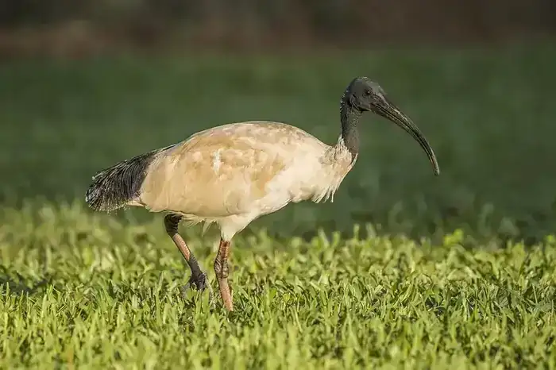
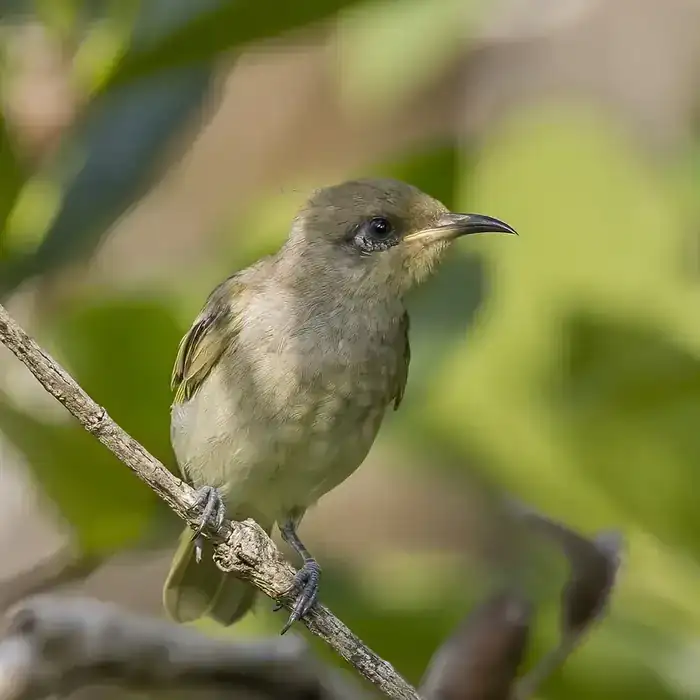

First, what the theory actually says
"Darwinism" is mostly a word used by critics. Modern evolutionary biology is not 1859 natural selection alone; it is a set of claims that have different levels of support, and it is worth stating them separately, because most arguments against "Darwinism" attack a version nobody defends.
Maps, diagrams and images




- Common descent. Living things share ancestors; the pattern of life is a branching tree. Supported by genetics, fossils, biogeography and molecular evidence, independently.
- Mechanisms. Mutation, recombination, selection, drift, migration and developmental constraint change populations over time. The existence of these is not controversial; their relative importance is debated.
- Deep time. The Earth is about 4.5 billion years old and life about 3.8 billion. Supported by physics, chemistry and multiple independent dating methods.
- Speciation. Populations split into reproductively isolated species. Observed directly, in the field and in the lab.
None of this requires anyone to be an atheist, and many biologists are not. The archive's job here is narrower: does the evidence offered against evolution do what it claims?
The case against, claim by claim
Twelve of the most common arguments, each stated in its strongest form and checked. Count at the bottom: of the twelve, none supports the conclusion that evolution is false.
| Claim | What is offered | What the evidence shows | Verdict |
|---|---|---|---|
| There are no transitional fossils | Gaps between major groups; "missing links" | Tiktaalik (2006) for the fish–tetrapod transition; Archaeopteryx and the feathered dinosaurs; the whale series (Pakicetus, Ambulocetus, Basilosaurus); dozens of hominins. Gaps remain at fine resolution — that is what a fossil record does | False |
| The Cambrian explosion shows animals appeared suddenly | Most animal body plans appear in a short window, with no ancestors | The window is roughly 20 million years, not instant; Ediacaran and Cambrian stem groups precede and surround it. The tempo is a genuine research question, and it does not imply separate creation | Partly true |
| Some systems are irreducibly complex | Behe: the bacterial flagellum could not evolve because all its parts are needed | Homologous systems with fewer parts exist (the type III secretion system), and co-option is documented. The claim was tested in court in 2005 and produced no peer-reviewed research programme | False |
| Evolution breaks the second law of thermodynamics | Order cannot increase without a designer | The law applies to closed systems. Earth is open, bathed in sunlight, and entropy increases overall. This argument has been rejected by physicists, including religious ones | False |
| Radiometric dating is unreliable | Assumptions about decay rates and closed systems | Decay constants are measured and stable; isochron methods test the assumptions; results cross-check against tree rings, varves, ice layers and each other across methods | False |
| No new species has ever been observed | Speciation is inferred, never seen | Documented repeatedly: a new finch lineage on Daphne Major (2018, reproductive isolation in three generations), cichlids in a Nicaraguan crater lake in under 10,000 years, apple-maggot host shifts, polyploid plants | False |
| Mutations cannot add information | Random changes only destroy function | Antibiotic resistance, nylon-degrading enzymes, lactase persistence, malaria resistance in heterozygotes — and Lenski's long-term E. coli experiment, where a new metabolic ability evolved and was traced to its mutations | False |
| Evolution is "only a theory" | The word "theory" means a guess | In science a theory is an explanatory framework that has survived testing. Germ theory and plate tectonics are "only theories" in the same sense | False |
| Human and chimp DNA cannot be that similar | 98% similarity is a myth or a trick | Whole-genome comparisons give roughly 98–99% identity in aligned sequence, with differences concentrated in indels and regulatory regions; shared broken genes and shared endogenous retroviruses are independent corroboration | False |
| "Vestigial" organs are not vestigial | The appendix has a function; the word is misleading | Fair as far as it goes: "vestigial" means reduced, not useless, and the appendix example is poor. Whale pelvic bones, the human coccyx and the broken vitamin-C gene are stronger cases — and they remain evidence of ancestry | Partly true |
| Haeckel faked the embryo drawings | Textbook illustrations were exaggerated to show similarity | True. The drawings were simplified and misleading, and the case is a real caution about textbook images. It changes nothing about the genetic and fossil evidence, which did not exist in 1874 | True, irrelevant |
| Fossil hoaxes show the field is unreliable | Piltdown Man, Archaeoraptor, the Ica stones | All real hoaxes — and all exposed by scientists, not by critics. Piltdown was unmasked in 1953 by dating and anatomy; Archaeoraptor was retracted by National Geographic in 2000 | True, irrelevant |

The alternatives, and what kind of thing each is
"Alternative to evolution" bundles together very different proposals. Some are religious positions that make no scientific claim; some claim to be science and have been tested; some are abandoned scientific ideas; one or two are live research programmes.
| Position | What it claims | Status |
|---|---|---|
| Young Earth creationism | The Earth is about 6,000 years old (Ussher, 1650); a global flood laid down the fossil record; radiometric dating is wrong | Debunked — contradicted by physics, geology, ice cores, tree rings and the fossil sequence itself. Still the position of Answers in Genesis and the ICR |
| Old Earth creationism | Deep time is real; creation occurred in stages, or the "days" are ages, or there was a gap between Genesis 1:1 and 1:2 | Theological — makes no testable scientific claim, and does not dispute the age of the Earth |
| Intelligent design | Some biological features are best explained by an intelligent cause; ID is a scientific alternative | Not science — ruled so in Kitzmiller v. Dover (2005) after a six-week trial; no peer-reviewed research programme; the Discovery Institute's "Wedge" strategy document describes the goal as cultural, not scientific |
| Theistic evolution | God creates through evolution; mainstream science is accepted | Compatible — the position of Francis Collins, BioLogos and most religious scientists. It is a theological stance, not a rival to the evidence |
| Lamarckism | Characteristics acquired in life are inherited | Abandoned — no mechanism for most traits. Epigenetic inheritance is real but is not Lamarckism, and creationist use of "epigenetics" as a rescue is a category error |
| Orthogenesis | Evolution moves in a predetermined direction, driven from within | Abandoned — the appearance of direction is explained by selection and constraint |
| Saltationism | New forms appear in single large jumps | Mostly rejected — though punctuated equilibrium (Gould and Eldredge, 1972) is a real, accepted argument about the pace of change, not about jumps between body plans |
| Origin-of-life chemistry | RNA world, metabolism-first, alkaline vent scenarios (Miller–Urey 1953; Gilbert 1986; Lane) | Live debate — how life began is genuinely unsolved. This is a gap in knowledge, not evidence against common descent |
| Panspermia | Life arrived from elsewhere; Crick and Orgel proposed directed panspermia in 1973 | Untested — moves the origin problem rather than solving it, and has no positive evidence |
| Cosmic ancestry, Raelian "scientific creation" | Life was engineered by extraterrestrials; evolution is a lie | Fringe — no evidence, no testable mechanism, and the same category error about what counts as data |
| Aquatic ape | Human features (hairlessness, fat, breath control) reflect a semi-aquatic phase | Rejected — an honest heterodox idea (Hardy 1960, Morgan) that has not survived testing; it concerns human evolution, not common descent |
Where the real arguments are
If you want the actual live controversies in evolutionary biology — the ones biologists argue about in journals — they are these, and none of them questions common descent:
- How life began. No consensus; competing chemistries, none demonstrated end to end.
- Tempo. Gradualism versus punctuated equilibrium; how fast the Cambrian radiation really was.
- Selection versus drift. How much of the genome changed neutrally (Kimura, 1968) rather than adaptively.
- How much DNA is functional. ENCODE's 2012 "80% functional" claim is disputed; critics put the figure far lower.
- Levels of selection. Gene, organism, group; kin selection versus multi-level selection.
- The extended evolutionary synthesis. Niche construction, developmental bias and plasticity as causes, not just consequences (Pigliucci, Müller).
- Consciousness and mind. Not explained by evolutionary theory, and not obviously an evolutionary question.
These are disagreements about mechanism and emphasis inside a framework whose core has not moved. That distinction — real debate versus a failed challenge — is the whole point of this page.
The legal record
In the United States the question has been litigated repeatedly, and the pattern is consistent: religious positions may be taught, but they may not be presented as science in public school science classes.
- 1925
Scopes "monkey trial", Tennessee: a teacher convicted under a law banning evolution teaching. The conviction was overturned on a technicality.
- 1968
Epperson v. Arkansas: the Supreme Court strikes down bans on teaching evolution as religiously motivated.
- 1987
Edwards v. Aguillard: "balanced treatment" laws requiring creation science are unconstitutional.
- 2005
Kitzmiller v. Dover: after a six-week trial, Judge Jones rules that intelligent design is not science and that the Dover policy was religious. He calls the board's conduct "breathtaking inanity".
Creationism is a religious position and is entitled to be argued as one. It is not entitled to be called science, and the specific factual claims it makes — a 6,000-year-old Earth, a global flood, no transitional fossils — have been tested and failed. Theistic evolution shows that accepting the evidence is compatible with belief; that is a live option, and it is not what this page is arguing against.
The wider pattern is the one in the giants dossier and flood myths: a claim that begins as theology, borrows the language of science, and then treats the absence of proof as proof. The Silurian hypothesis is a useful contrast — a genuinely scientific speculation about deep time, stated with its own falsification conditions.
Sources for this page
- Kitzmiller v. Dover Area School District, 400 F. Supp. 2d 707 (M.D. Pa. 2005) — full memorandum opinionlaw.justia.com
- National Center for Science Education, on the legal basis of Kitzmillerncse.ngo
- Edwards v. Aguillard, 482 U.S. 578 (1987)law.cornell.edu
- Grant & Grant (2018), "Rapid hybrid speciation in Darwin's finches", Sciencescience.org
- Barluenga et al. (2006), "Sympatric speciation in Nicaraguan crater lake cichlid fish", Naturenature.com
- Daeschler, Shubin & Jenkins (2006), Tiktaalik roseae, Naturenature.com
- Lenski, long-term evolution experiment — citrate use and its genetic basisthe-ltee.org
- Wikipedia, "Kitzmiller v. Dover Area School District" — trial and rulingen.wikipedia.org
- Wikipedia, "Objections to evolution" — the arguments and the responsesen.wikipedia.org
- BioLogos, theistic evolution and evolutionary creationbiologos.org
Open resources on this topic
- PapersOpen-access articles: DOAJ · PubMed Central · Internet Archive Scholar
- BooksPublic-domain and borrowable copies: Open Library · Project Gutenberg · Google Books · Internet Archive
Cite this page
Momin, S. (2026). Creationism and the Alternatives to Darwin. The Larger World Archive. https://drsamonline.github.io/LARGE_GLOBE/creationism.htmlMomin, Sohil. “Creationism and the Alternatives to Darwin.” The Larger World Archive, 2026, https://drsamonline.github.io/LARGE_GLOBE/creationism.html.Momin, Sohil. “Creationism and the Alternatives to Darwin.” The Larger World Archive, 2026. https://drsamonline.github.io/LARGE_GLOBE/creationism.html.@misc{creationism2026creationism,
author = {Momin, Sohil},
title = {Creationism and the Alternatives to Darwin},
year = {2026},
howpublished = {The Larger World Archive},
url = {https://drsamonline.github.io/LARGE_GLOBE/creationism.html},
note = {Last reviewed 20 November 2026}
}Last reviewed 20 November 2026 · Corrections policy · this page is not peer reviewed